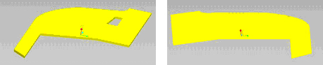

Home
| Profile
| Engineering Projects
| Designs
| Animations
PIRATES OF THE GREAT HALL
Design
To cross the moat, our main strategy was to widen the wheel base to increase ground contact. By driving across the moat at a 30? angle, we could safely cross, and only one wheel would lose contact with the ground. With the locked differential, the wheels would still rotate. The wings provided stiffness and prevented the car from driving down into the moat.
To carry the pucks and balls, we built a forklift arm with an attached claw that could open and close around the pucks. We decided on a forklift arm because we had the necessary materials (rack, rack pinion, and servo) and it seemed to be the obvious choice. Designing the support to attach the arm to the car was more difficult and required more thought and analysis, but in the end, the arm was probably the most reliable part of our car.
To move the center of mass closer to the back of the car, we attached unused brass rods to the rear of the car.
|
Arm |
The tube and claw picked up the pucks and balls. The bottom claw was meant to grasp the pucks and balls. The top claw fitted around the tube to provide lateral support. |
|
Claw Mechanism 
|
Both claws were connected to a 32P, 32T gear. These gears were driven by a 32P, 16T pinion gear that was connected to the servo. The resulting gear ratio was 2 to 1. Through testing, we found that the servo was capable of opening the claws by more than 90°. The servo was connected to the driving gear by a shaft and a connecting plate. Instead of slotting the plate and making a tab on the shaft, we instead drilled a hole in the connecting plate to fit the shaft. We secured this connection with a set screw. In order to fit the driving gear, the shaft had to be narrowed. Because of this it was necessary to construct a sleeve so the shaft could fit the bottom bearing. The ends of the plates were also rounded to prevent interference with the opening of the tube. The plates were also narrowed at the connection to the rack support, so we could maximize the depth of the claw extension. |
|
Arm Support |
The arm support allowed the arm to forklift up and down. |
|
Wings  |
The wings were attached to the bottom of the chassis and were meant to assist moat-crossing. The wings were constructed out of 1/16inch aluminum. |
|
Arm Gearbox |
Through calculations, we chose a gearing ratio of 45.82. This allowed the arm to move at a speed of 15cm/s and generated enough force to lift 14kg. This gearing ratio provided adequate speed and power without requiring too many gearing stages. |
|
DriveTrain Gearbox 
|
Through mock testing, we determined our desired maximum speed to be 7.5ft/s. Given the available combinations of gear, we designed the gearbox to maintain a speed of 8.8ft/s. |